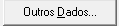

SPED CONTABIL
O SPED Contábil (Sistema Público de Escrituração Digital) é um sistema criado para substituir os livros contábeis em papel por registros digitais. Ele faz parte do projeto SPED e tem como objetivo modernizar e agilizar a escrituração contábil das empresas, permitindo que os dados sejam transmitidos eletronicamente à Receita Federal. A Escrituração Contábil Digital (ECD) é uma das obrigações do SPED Contábil e inclui a transmissão digital de documentos como:
- Livro Diário e seus auxiliares;
- Livro Razão e seus auxiliares;
- Balancetes Diários, Balanços e fichas de lançamento que comprovam os registros contábeis.
VERIFICANDO PARÂMETROS
É importante verificar se os paramentos estão devidamente configurados para isso vá em controle/Parâmetros ou use o atalho "Alt+C+P",
Os parametros devem está como na imagem abaixo no caso de empresas do lucro presumido.(Em breve atualizaremos sobre lucro real e etc.)
Outra coisa que também é muito importante nos atentarmos é em relação os sIgnatários, certifique-se que o contador esteja como procurar e com a opção responsável pela assinatura ECD esteja marcadado como sim para o contador.
Caso a empresa não tenha faturameno no perído é importante registrar uma depesa que não seja depreciação.
GERANDO ARQUIVO SPED_DIARIO000.TXT
Agora vamos em Relatórios/Informativos/SPED Contábil ou use o atalho "Alt+R+F+S"
Este tela será exibida.
click em "Outros Dados" 
CONFIGURAÇÃO DO ARQUIVO
Essa é a tela de configuração do arquivo para o SPED contábil.
Deixe as configurações como estão na imagem abaixo.
Em dados Coloque o número do livro caso não saiba procure a ultima enviada, nesse caso temos a primeira.
Nesse caso não precisa marcar nada
Nesse caso não precisa marcar nada
Nesse caso não precisa marcar nada
confirme
Com tudo devidamente marcado como nos exemplos confirme as configurações, escolha o local do para salvar o arquivo de preferencia uma pasta organizada.
PROGRAMA SPED CONTABIL
Tela do SPED Contábil
IMPORTACAO DO ARQUIVO
Vamos importar o arquivo sped_diario00000.txt na pasta que salvamos
AVISOS
Basta confirmar os aviso segue abaixo algumas imagens porém elas podem variar se ocorrem erros.
Será emitido um relatório de erros e advertencias, caso sejama apenas adivertencias pode prosseguir porém se ocorrerem erros deverão ser corrigidos, cada erro deve ser tratado anstes de prosseguir
GERAR ARQUIVO
Aqui precisamos apenas salvar o arquivo assim como fizemos anteriormente acrescrete o ano no final para distinguir os arquivos "2024-2025" por exemplo, esse arquivo será usando na ECF como recuperacao da ECD, grave o arquivos e vá para as assinturas.
ASSINATURAS
A parte de assinaturas é bem intuitivos o certicado certificado deve está instalado na maquina, o procurador deve ser o priemiro a ser assinado.
Importante -> Agora vem uma parte muito importe, não transmita a ECD agora para não ocorrer erros, faça a primeiro o preechimento da ECF, para o tutorial de entrega da ECF clique AQUI. .